東京大学 2015年 理科 第2問
問題
どの目も出る確率が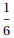のさいころを1つ用意し、次のように左から順に文字を書く。
さいころを投げ、出た目が1,2,3のときは文字列AAを書き、4のときは文字Bを、5のときは文字C を、6のときは文字Dを書く。さらに繰り返しさいころを投げ、同じ規則に従って、AA、B、C、Dをすでにある文字列の右側につなげて書いていく。
たとえば、さいころを5回投げ、その出た目が順に2,5,6,3,4であったとすると、得られる文字列は
AACDAAB
となる。このとき、左から4番目の文字はD、5番目の文字はAである。
(1) nを正の整数とする。n回さいころを投げ、文字列を作るとき、文字列の左からn番目の文字がAとなる確率を求めよ。
(2) nを2以上の整数とする。n回さいころを投げ、文字列を作るとき、文字列の左からn-1番目の文字がAで、かつn番目の文字がBとなる確率を求めよ。
解答
(1)
n=1のとき、1番目の文字がAとなる確率は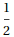。
n≥2のとき、n番目の文字が
「AA」の1文字目になる確率を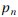、
「AA」の2文字目になる確率を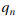、
「B」「C」「D]となる確率を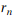とおく。
これらを用いて漸化式を解くと
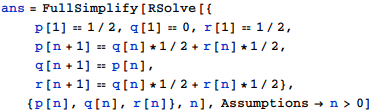
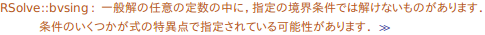
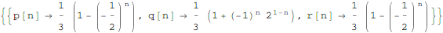
よって求める確率は
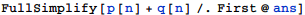
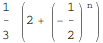
であり、これはn=1のときも成立する。
(2)
n=2のとき、求める確率は0
n≥3のとき、n-1回目がAの2文字目で、n回目でサイコロ4を出す確率であるから、求める確率は
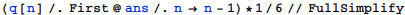
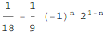
これはn=2のときも成立。
補足・感想
RSolveで警告が出ているものの、その原因は分からなかった。一意に解けるはずなのだが。